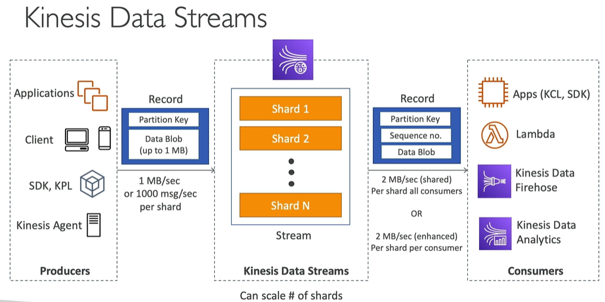

Kinesis Data Streams
Contents
Kinesis Data Streams#
required for processing stream data
able to scale horizontally
when creating data stream, number of shards has to be declared by creator.
By the number of shard you define consumption rate and ability to ingestion of big data (shards are used to split incoming data and create parallel processing)
Kinesis Data Streams is a proprietary product developed by AWS and is not based on open-source Apache Kafka
Producers#
Used for gettting data into AWS Kinesis stream
data are created by producers
producer can be an application, other client, AWS SDK command or Kinesis Agent
producer send record to Kinesis Stream
record contain Partition Key and Data Blob (up to 1MB)
partition key define which shard record will be sent to
one shard can ingest 1MB of data per second or 1000 messages per second (AWS limit, see more https://docs.aws.amazon.com/streams/latest/dev/service-sizes-and-limits.html)
Producer types#
AWS SDK#
you can use AWS CLI to send records to Kinesis Stream
you can send record to stream using
put-record(one record) orput-records(many records) cli command (see examples below)PutRecords increase your throughput - it generates less HTTP requests
can be used on mobile app (Ios, android)
USE CASE: low throughput, higher latency accepted, simple API, Lambda
raises ProvisionedThroughputExceeded exemption when go over the limits
kinesis simply rejects records exceeding limits, itself not repeat the put operation
can be solved by exponential backoff retry (i.e. after 2,4,8,16 seconds) or by increasing number of shards
make sure you don’t have hot shard (shard for which the most record partition keys are send)
AWS KPL#
Kinesis Producer Library, have more option than SDK and are able to solve advanced issues
easy to implement C++/Java library (the most often Java is used)
USE CASE: high throughput, low latency, asynchronous, long running producers, but no in cases when you are focused on very low latency (due to default mini-batch functionality)
includes automated retry mechanism
both synchronous and asynchronous API are available - in opposition to AWS SDK when only synchronous is possible
by default, also submit metrics to cloudwatch, so you can monitor kinesis data stream
supports mini-batching, enabled by default, used to improve throughput and decrease costs
collects records and send to Kinesis Stream in one record (executing on one PutRecords API call)
aggregate records to fill 1MB/sec limit, and then send them using one PutRecords API call
uses RecordMaxBufferedTime option, default 100ms, which states how long Kinesis has to wait to implement batching on produced records
by batching, latency is increased
compression has to be still implemented by user - uncompression has to be implemented in consumer solution
records handled by KPL can be consumed only by KCL (Kinesis Consumer Library) or special helper library
Kinesis Agent#
linux tool which can be used on external linux server and i.e. send logs from this server
java-based agent, built on top of KPL. Monitors server logs and send new records to Kinesis Stream
available only for linux servers
features:
can write from multiple locations to multiple Kinesis Streams
can route based on directory/log file
can preprocess data before sending to streams (csv to json, json to csv etc)
handles file rotation, retry upon failures…
store own metrics in cloudwatch
3rd party applications (Spark, Flume, Kafka Connect, NiFi)#
Hands-on#
AWS SDK (CLI)#
Stream Management#
aws kinesis create-stream --stream-name test_mg --shard-count 1 --profile michal --region eu-west-1
aws kinesis list-streams --profile michal --region eu-west-1
aws kinesis describe-stream --stream-name test_mg --region eu-west-1 --profile michal
aws kinesis update-shard-count --stream-name test_mg --target-shard-count 2 --scaling_type UNIFORM_SCALING
aws kinesis delete-stream --stream-name test_mg --profile michal --region eu-west-1
Produce records#
aws kinesis put-record --stream-name test_mg --region eu-west-1 --profile michal --partition-key user1 --data '{"action": "user signup"}' --cli-binary-format raw-in-base64-out
aws kinesis put-record --stream-name test_mg --region eu-west-1 --profile michal --partition-key user1 --data '{"action": "user login"}' --cli-binary-format raw-in-base64-out
aws kinesis put-records --stream-name test_mg --region eu-west-1 --profile michal --records file://records.json
where records.json has below structure:
[
{
"PartitionKey": "user1",
"Data": {
"action": "user signup"
}
},
{
"PartitionKey": "user1",
"Data": {
"action": "user login"
}
},
{
"PartitionKey": "user2",
"Data": {
"action": "user signup"
}
}
]
aws kinesis put-record --stream-name test_mg --region eu-west-1 --profile michal --partition-key user1 --data-binary fileb://binary-data.bin
Consumers#
data ingested by shards of Kinesis Stream can be retrieved by other application - called Consumer
consumer can be an application, AWS Lambda (by event), Kinesis Data Firehose or Kinesis Data Analytics
additionally to record created by producer, consumer see sequence number field which describe the position of record within shard
there are two types of limits for consumers
2MB/sec per shard for all consumers
2MB/sec per shard per consumer - if you enable enhanced consumer mode

Properties/characteristics#
has retention, which can be defined by stream creator - can be from 1 to 365 days
ability to reprocess data (based on retention mentioned in line above)
data in stream are immutable (cannot be changed)
records with the same partition key goes to the same shard
Capacity modes#
provisioned mode (older)
you need to manually declare number of shards for created Kinesis Stream
each shard is limited by AWS limits (shard consumer 1MB/sec or 1000 messages/sec, shard producers 2MB/sec)
costs are calculated by number of shards provisioned by hour
on-demand mode (newer)
capacity is declared automatically
default capacity = 4MB/s or 4000 records per second per shard
maximum capacity = 200MB/s and 200000 records per second
scales automatically based on throughput peak during the last 30 days
costs are calculated based on number of streams and data transfered in and out of the stream
if you don’t know size of events
Security#
Kinesis Shards are created within your account and region
shards can be connected from private subnet using VPC endpoint
shards can be connected from public subnet using the internet
transfer of data is encrypted using HTTPS
data are encrypted at rest using KMS